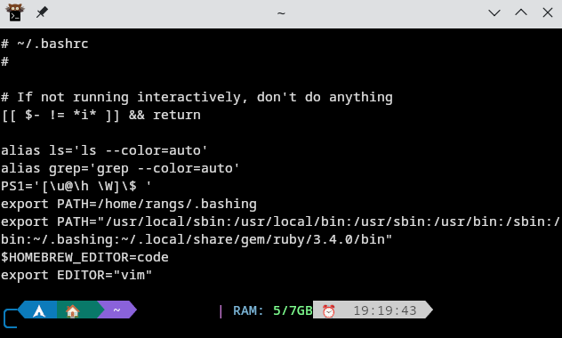
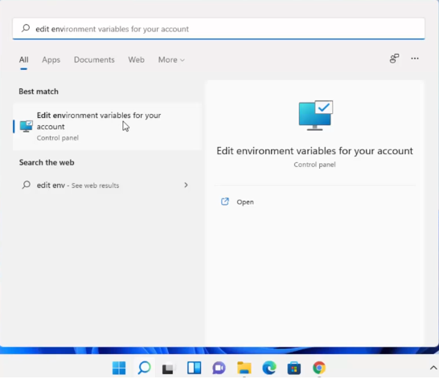
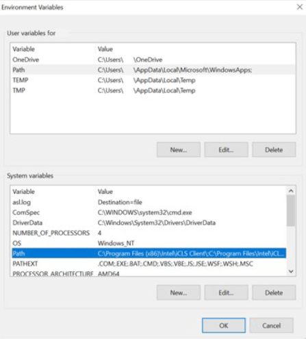
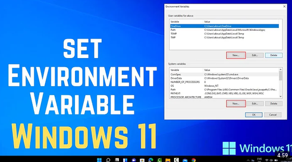

Apa itu PATH?
PATH adalah istilah yang digunakan untuk menggambarkan daftar direktori yang akan dicari oleh sistem operasi ketika kita mengetikkan perintah di terminal.
"Satu hal yang membuat developer bingung ketika menginstall software dengan GUI adalah karena mereka tidak tahu cara menambahkan PATH"
— RangS
Pada artikel ini, kita akan membahas tentang PATH atau lebih tepatnya environment variable dan bagaimana menerapkannya dalam praktik pemrograman.
PATH Environment Variable

PATH adalah environment variable yang digunakan oleh sistem operasi untuk menentukan lokasi direktori tempat executable file berada. Executable sendiri adalah file yang dapat dijalankan oleh sistem operasi dan biasa berakhiran .exe untuk windows, tapi tidak selalu executable, file script seperti .sh atau .py juga dapat dijalankan. Ketika kita mengetikkan perintah di terminal, sistem akan mencari executable file tersebut di direktori yang tercantum dalam PATH.
Jika PATH tidak diatur dengan benar, maka sistem (terutama terminal) tidak akan tahu di mana ia mengeksekusi perintah yang kau minta.
Linux dan MacOS
Di Linux maupun MacOS, PATH juga digunakan untuk menentukan lokasi direktori tempat executable file berada. Untuk mengatur PATH di Linux atau MacOS, kau dapat menambahkan baris berikut ke file konfigurasi shell kau (misalnya .bashrc, .zshrc, dll):
export PATH=$PATH:/directory/executable/Baca Juga: Terminal: Kawan Sejati Programmer
Nah, aku sering menggunakan fish sebagai shell utama. Untuk menambahkan path ke dalam fish shell, kau cukup mengetik:
fish_add_path /directory/executable/Ah iya, aku hampir lupa. Yang dimasukkan ke dalam PATH adalah lokasi direktori alias folder, bukan file executable itu sendiri. Jadi semisal kau memiliki file executable di /home/user/bin/nama-executable-file, maka kau perlu menambahkan /home/user/bin ke dalam PATH.
Kurang lebih cara kerjanya seperti ini:
Kau punya file executable di /home/user/bin/nama-executable-file.exe
Kau menambahkan /home/user/bin ke dalam PATH
Ketika kau mengetikkan nama-executable-file.exe di terminal, sistem akan mencari file
executable tersebut di direktori yang tercantum dalam PATH, yaitu /home/user/binLalu, jika kau punya beberapa file executable di direktori yang berbeda, kau perlu menambahkan semua direktori tersebut ke dalam PATH dengan tanda ":" untuk memisahkan direktori, misalnya:
export PATH="$PATH:/usr/local/sbin:/usr/local/bin/"Kode di atas mengartikan kau mengambil file executable dari direktori /usr/local/sbin dan /usr/local/bin.
File Executable
Mari kita bahas jenis file executable yang bisa di jalankan oleh sistem operasi:
Windows: .exe, .bat, .cmd, .ps1
Linux: .sh, .run
MacOS: .shSedikit catatan juga, jenis file ini bisa dijalankan jika kau memiliki permission terhadap direktori atau file tersebut. Misalnya:
Windows: Set-ExecutionPolicy RemoteSigned -Scope CurrentUser
Linux & MacOS: chmod +x nama-file.shWindows
Untuk di windows sendiri, sebenarnya cukup gampang. Ikuti langkah-langkah berikut:

- Search Edit Environment Variables, Enter
- Pilih Path di bagian System variables, lalu klik Edit
- Klik New, lalu masukkan direktori tempat executable file berada
- Klik OK untuk menyimpan perubahan

Setelah perubahan tersimpan, coba buka shell baru (powershell atau cmd) dan ketik nama file executable yang ingin kau jalankan. Misal, sebelumnya kau memasukkan directory C:\xampp\php\, kau tinggal tes dengan mengetik:
php -vJika berhasil, maka akan muncul versi php yang terinstall di sistemmu. Dan... Ya, mungkin hanya itu yang bisa kujelaskan. Ingatlah kalau yang dimasukkan adalah direktori atau foldernya, BUKAN file executablenya. Aku sering melihat orang salah memasukkan directory ke dalam PATH.
Kesimpulan
Jadi, PATH adalah environment variable yang digunakan oleh sistem operasi untuk menentukan lokasi direktori tempat executable file berada. Dengan mengatur PATH dengan benar, kita dapat menjalankan perintah di terminal tanpa harus menyebutkan path lengkap dari executable file tersebut, dengan kata lain kita bisa menjalankan file yang berada di direktori yang berbeda sekalipun. Semoga artikel ini bermanfaat dan membantu kalian memahami konsep PATH di berbagai sistem operasi. Jika ingin pelajari lebih lanjut, silakan cek video berikut:
Link ke Video.
